Guilds
Overview
In NeverQuest, players can create and manage a guild that is full of NPC players. Guilds members can be one of three playable classes {Sorceress, Warrior, Priestess}. Guild members can be recruited for grouping with (grinding XP, or killing rare monsters) or for raiding with (challenging very difficult higher level monsters).
Strategy and Team Building
Grouping and XP Grinding
The Classic: 1 x Cleric, 1 x High Lord, 2 x Pyromancer
One of the most balanced groups, able to provide high DPS as well as sustain even when pulling multiple monsters.
Kiting: 2 x Pyromancer, 1 x Archmage
Works great when utilizing Druid or Ranger skills that can Root or Snare. Pyromancers provide big DPS and Burn, Archmage provides crowd control.
Guildmate Items
Each guildmate can equip 5 items : [Chest, Hands, Feet, Head, Weapon] similar to your playable character. In the guild menu you can choose each Class and equip the items using the interface there. Each guildmate of that class will utilize whatever items you equip!
Guildmate Recruiting
As you level up your guild, more recruits will be available to you. You can recruit guild members at any time as much as you want, but each recruitment costs a certain amount of gold pieces (GP). Each potential recruit has a set of hidden stats that only become available when they join the guild - stats range from D to SS. SS guild members are extremely rare, and can be really valuable if you eventually begin raiding with your guild. You can view their stats and subclass using the Details button on the guild roster.
For tanks, you want to land high HP and AC. For casters you want high WIS and MANA.
Leveling Up Guildmates
Guildmates accumulate experience when they group and raid with you. Only the guild members present in the group or raid will accumulate experience points (XP). Your groups XP is divided evenly to each group member (including you!). When your group is full (5 members total) you will receive a small bonus XP multiplier. Choose your companions wisely - you don't want to invest time and XP into guild mates with low base stats (C or below).
Guildmate Classes & Subclasses
Each guildmate can have 1 of 3 subclasses, which are randomly selected when you recruit them.
Sorceress
The Sorceress is a spellcaster, who fires a projectile attack from distance. They will auto-attack when an enemy is within their spell casting range.
Sorceress - Pyromancer
The Pyromancer is the highest DPS of the three subclasses, with a higher base damage and ability to apply DOT with their Everburn skill.
| Icon | Skillname | Unlock Level | Description | Rating (D->S) |
|---|---|---|---|---|
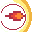 |
Fireball | 1 | Transforms primary attack into a fireball | A |
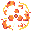 |
Everburn | 15 | Primary skill applies ticks of Burn | C |
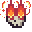 |
Inferno | 35 | ? | ? |
Sorceress - Arch Mage
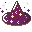
The Archmage is a balanced caster combining shielding and survivability with DPS from distance. The Archmage fits well in kiting groups.| Icon | Skillname | Unlock Level | Description | Rating (D->S) |
|---|---|---|---|---|
| ? | 1 | ? | A | |
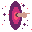 |
Teleport | 15 | Teleport a short distance away after taking damage | S |
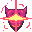 |
Arch Shielding | 35 | ? | ? |
Sorceress - Enchantress
The Enchantress provides crowd control and mana regeneration for the group. Mana regeneration is a rare ability / perk.
| Icon | Skillname | Unlock Level | Description | Rating (D->S) |
|---|---|---|---|---|
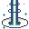 |
Mana Beam | 1 | ? | ? |
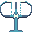 |
Clarity | 15 | ? | ? |
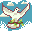 |
Peaceful Thought | 35 | ? | ? |
Warrior
The Warrior is a tank who excels at mitigating damage and maintaining aggro in a group or raid setting. The three subclasses are {High Lord, Berserker, Myrmidon}.
Warrior - Myrmidon
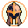
The Myrmidon is a classic tank. High Armor Class and damage mitigation, and abilities to generate and maintain aggro. The perfect solution for high damage scenarios like Raiding or difficult camps for XP grouping.| Icon | Skillname | Unlock Level | Description | Rating (D->S) |
|---|---|---|---|---|
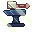 |
Master Armorer | 1 | Gain additional AC from worn items | S |
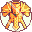 |
Plate Mail | 15 | Your AC cap is raised | S |
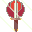 |
Taunt | 35 | Emit a particularly offensive Taunt, inciting rage in your enemies and gaining a spot at the top of the aggro list | A |
Warrior - High Lord
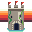
The High Lord provides decent tanking, and some unlockable skills that help with exploration. He has the only ability known to increase gold dropped by enemies.| Icon | Skillname | Unlock Level | Description | Rating (D->S) |
|---|---|---|---|---|
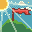 |
Inspire | 1 | Group members gain STR and DEX | S |
| Tax Collector | 15 | Additional gold is gained from monsters | B | |
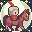 |
Lone Warrior | 35 | High Lord gains additional damage and stats if he is the only warrior in the group | A |
Warrior - Berserker
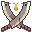
The Berserker provides additional DPS at the expense of utility and tankability. A good pick when you can provide main tanking for your group, or you are running multiple Warriors in your group.| Icon | Skillname | Unlock Level | Description | Rating (D->S) |
|---|---|---|---|---|
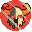 |
Berserk | 1 | Deals additional damage when more enemies are nearby | A |
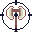 |
Critical | 15 | Gains crit. rate | A |
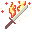 |
Flaming Flamberge | 35 | Attacks also apply burn damage | B |
Priestess
The priestess is a plate wearing healer, able to heal from a distance with a projectile orb. Also capable as a tank in certain scenarios - the Priestess does not deal melee damage when tanking but she will continue to heal.
Priestess - Cleric
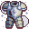
The Cleric has high AC and high healing output. Her unlockable skills provide improved healing and mana regeneration.| Icon | Skillname | Unlock Level | Description | Rating (D->S) |
|---|---|---|---|---|
| Healing Adept | 1 | Transforms primary attack into a fireball | S | |
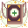 |
Platemail | 15 | Primary skill applies ticks of Burn | C |
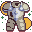 |
Divine Touch | 35 | ? | C |
Priestess - Valkyrie
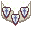
The Valkyrie is a warrior cleric, that heals better when tanking damage. The Valkyrie is the only subclass with the ability to perform a critical heal. I wouldn't mess with a group of Valkyrie.| Icon | Skillname | Unlock Level | Description | Rating (D->S) |
|---|---|---|---|---|
| Critical Heal | 1 | ? | S | |
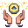 |
Overflowing Mana | 15 | ? | S |
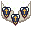 |
Phalanx | 35 | ? | D |
Priestess - Revenant
The Revenant provides the only source of shared damage mitigation in the game by tapping into some particularly dark magick.
| Icon | Skillname | Unlock Level | Description | Rating (D->S) |
|---|---|---|---|---|
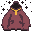 |
Critical Heal | 1 | ? | S |
| Overflowing Mana | 15 | ? | S | |
| Phalanx | 35 | ? | D |